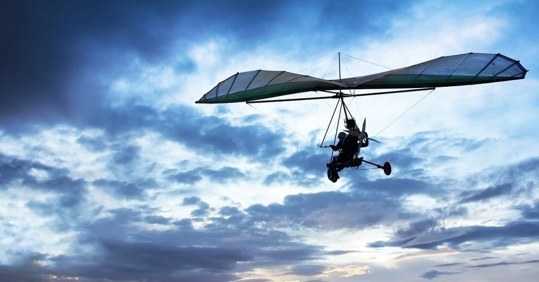

A sárkányrepülés egy légi sport vagy szabadidős tevékenység, amelynek során a pilóta könnyű, nem motoros, lábról indítható, levegőnél nehezebb repülőgéppel, úgynevezett sárkányrepülővel repül. A legtöbb modern sárkányrepülő alumíniumötvözetből vagy kompozit vázból készül, amelyet szintetikus vitorlavászon borítanak, így szárnyat alkotnak. A pilóta általában a repülőgépvázra felfüggesztett hevederben van, és a testsúly eltolásával irányítja a repülőgépet a vezérlőkerettel szemben.
